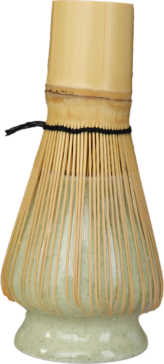
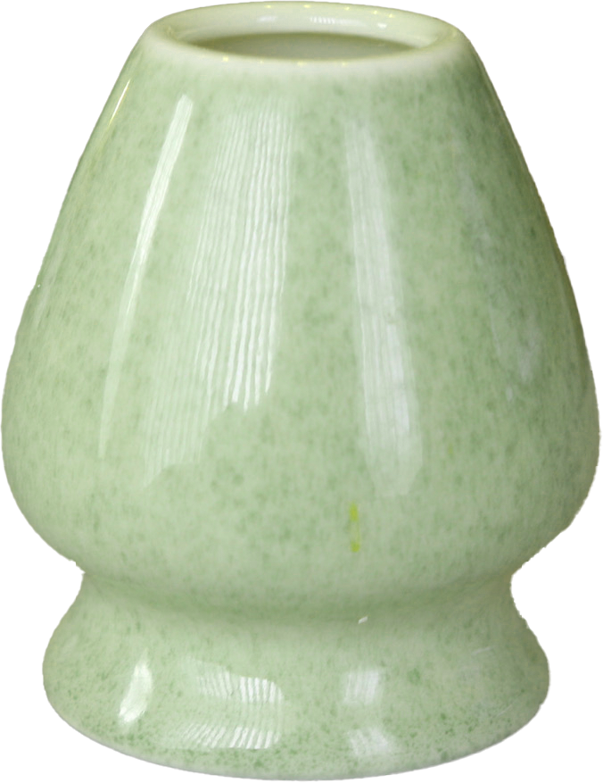
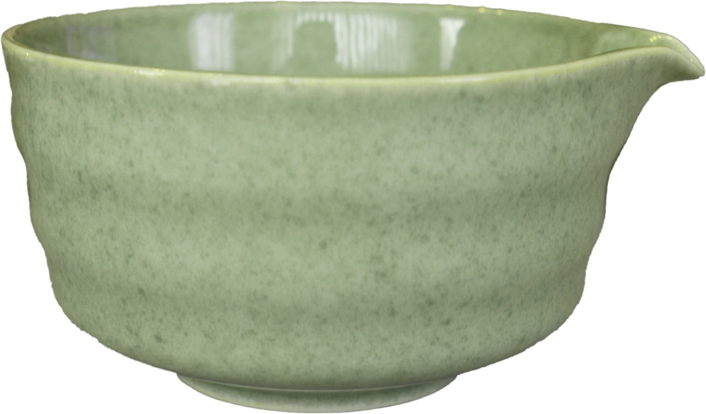
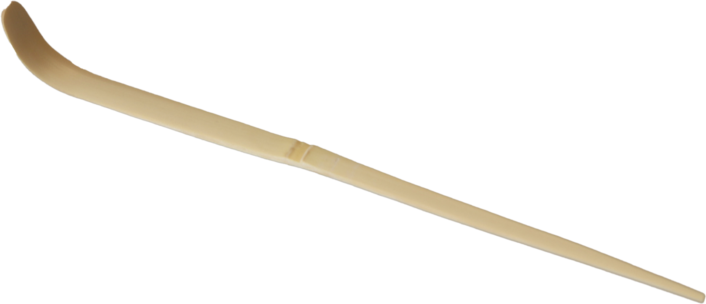

Chasen (Tea Whisk)

A chasen or tea whisk is the best tool for mixing and breaking down clumps of powder, creating the perfect layer of froth on top of the tea.
Alternative: electric frother
Chasen-tate (Whisk Stand)

If you have a Chasen whisk, the best way to dry and maintain its shape is by using a chasen-tate. It spreads the bristles so they dry into its original shape and prevents mold from forming after use.
Chawan (Tea Bowl)

Chawan tea bowls have a wider, flatter basin and high walls to prevent splashing when whisking matcha. Some bowls come with a spout for easier transfer to the cup.
Alternative: regular bowl
Chashaku (Tea Spoon)

Chashaku is a small bamboo spoon used in traditional Japanese tea ceremonies to precisely measure and scoop matcha. Two scoops with the chashaku is approximately one teaspoon.
Alternatives: measuring spoon, regular spoon
Tea Sifter
Sifting your matcha before whisking it is the best way to guarantee the least amount of clumps in your tea.
Where to Buy Matcha?
There are many matcha brands on the market, so consider your personal tastes when buying. If you have a favourite cafe or tea shop that sells their own matcha powder, that is a great way to start making matcha at home with guaranteed flavours to match your taste.
Here are some Canadian accessible matcha brands:
Storing Matcha
Fresh matcha is a vibrant green colour. Once exposed to humidity, heat, and light, matcha powder will begin to oxidize, and this will affect its flavours. To store matcha, put it in the refrigerator and try to finish it as soon as possible. After taking it out from the refrigerator, allow the matcha to return back to room temperature so it does not clump when exposed to air.

Maintaining Your Chasen
Before whisking your matcha, you should soak the whisk in a bowl or chawan with hot water for 30-60 seconds. This process is called chasen-toji (whisk soaking) or chasen-toshi. Make sure to evenly coat the top half of the tines—the part of the chasen above the black thread—in water by swishing it around in the bowl. This expands and softens the bristles, making it easier to whisk the matcha and lessening the risk of the bamboo breaking. It also helps with identifying any broken tines and taking them off before they get into your tea.
After each time you make your matcha, rinse off any matcha residue and foam from your whisk before it dries and sticks to the tines. Swishing your whisk around in a bowl with hot water should get red of most of the tea. Do not use soap to clean your whisk. If you still see some residue, you can pour more hot water onto the whisk while rotating it. Dry your chasen upright or onto your chasen-tate (whisk stand) to maintain its shape and to prevent mold from forming on the bamboo. Make sure the inner tines go into the under hole and the outer tines rest on the outside of the chasen-tate.
Cleaning Your Chashaku
Do not use soap or water to clean the leftover matcha on your Chashaku as it will absorb the matcha. Instead, take a clean, dry cloth or tissue and wipe off the excess powder until there is no more.